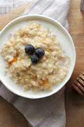

Oats Meal

Description
This is one of the easiest heavy meal you can have at home.
Ingredients
- Oats of any kind from the grocery store
- Blackberries, honey, nuts (optional)
Steps
- Boil some water
- When it's boiling, add your oats
- Stir until it's cooked and soft
- Add some sugar and taste
- Leave it out to cool, and add some milk, honey, and blackberries